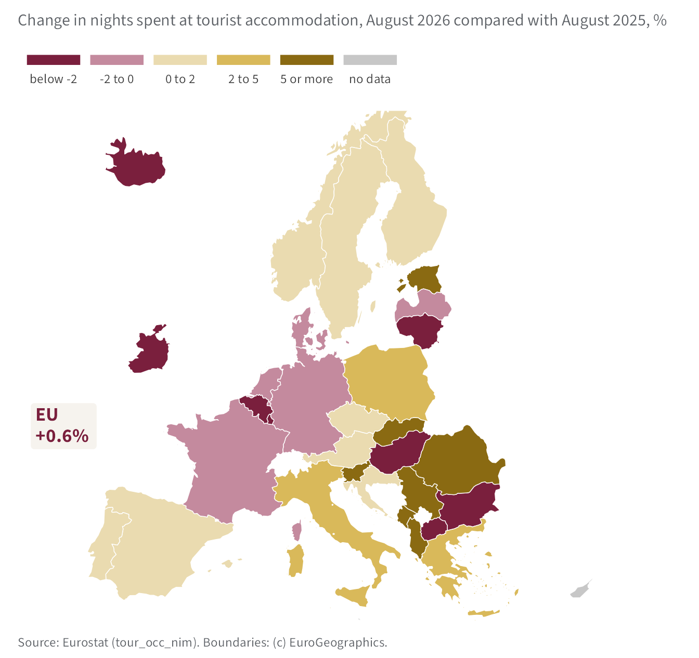
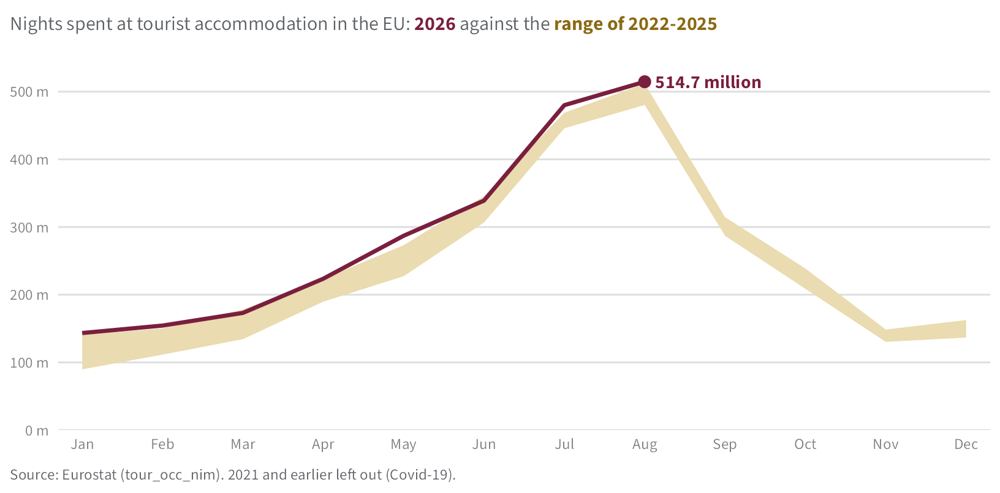

514.7 million
nights spent at tourist accommodation in the EU in August 2026, +0.6% compared with a year earlier.
Nights spent count every night a guest stays in hotels, holiday accommodation and campsites (NACE I55.1 to I55.3), whatever the guest’s country of residence.
1 The EU as a whole
No month on record had more nights than August 2026. Figure 1 compares this year with the four previous years; Section 2 looks at each country and Section 3 explains the figures.

2 Countries
Table 1 ranks the largest destinations by their change over the year: Italy recorded the strongest change (+3.3%) and France the weakest (-1.8%). Figure 2 shows every country with data.
| Country | Aug 2025 | Aug 2026 | Change, % |
|---|---|---|---|
| Italy | 95.6 | 98.8 | +3.3 |
| Greece | 34.0 | 34.7 | +2.1 |
| Austria | 17.9 | 18.1 | +1.3 |
| European Union | 511.8 | 514.7 | +0.6 |
| Croatia | 26.7 | 26.8 | +0.5 |
| Spain | 74.7 | 75.0 | +0.5 |
| Germany | 54.5 | 53.8 | −1.2 |
| Netherlands | 22.6 | 22.2 | −1.7 |
| France | 91.2 | 89.6 | −1.8 |
| Source: Eurostat (tour_occ_nim) | |||
3 Methods and sources
Data. All figures come from the Eurostat dataset Nights spent at tourist accommodation establishments, monthly data (tour_occ_nim), read with the R package eurostat when this bulletin was produced, on 8 November 2026. They cover hotels, holiday accommodation and campsites (NACE I55.1 to I55.3) and guests of every country of residence. Recent months are provisional and can be revised.
Comparisons. Each month is compared with the same month a year earlier, which removes the seasonal pattern without any adjustment. In Figure 1, the band shows the lowest and highest value of each month over 2022 to 2025; earlier years are left out because of the Covid-19 pandemic.
Classes of change. Table 1 and Figure 2 share five classes of yearly change, in %: below -2, -2 to 0, 0 to 2, 2 to 5, and 5 or more.
Maps. Country boundaries: GISCO, (c) EuroGeographics.
About this bulletin
The Northbridge Statistical Office is a fictional institute, made up to show how a statistical bulletin can be produced with Quarto. The data are real.
Reuse
Citation
BibTeX citation:
@report{tourism_statistics_unit2026,
author = {{Tourism Statistics Unit}},
publisher = {Northbridge Statistical Office},
title = {Tourism in the {European} {Union}},
date = {2026-11-08},
url = {https://example.org/bulletins/tourism},
langid = {en}
}
For attribution, please cite this work as:
Tourism Statistics Unit. 2026. “Tourism in the European
Union.” In Monthly Tourism Bulletin. Northbridge
Statistical Office. https://example.org/bulletins/tourism.